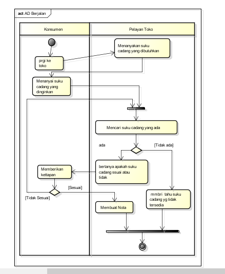

Nim: 1811500070
Nama: SINDI
Kelompok: TI6J
Hasil saya menyadur di pertemuan 2:
1.Perhitungan nilai kehadiran untuk setiap pertemuan cukup dengan membuat file imdex.html di setiap direktori pada repisotary github
2.menjelaskan tentang analisa masalah, kemudian di lanjutkan lagi dengan proses menganalisa sistem berjalan yang berisi SOP.
3.di lanjutkan lagi dengan membuat activity diagram
Hasil file project astah download
